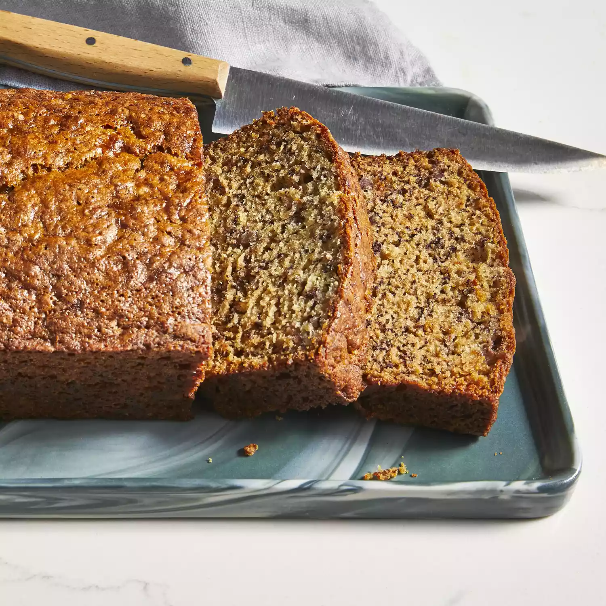

it will probably look like this, when you done with it
Greetings, this banana bread its not very good to lose weight, but its
tasty
Not a lot of people know about this recipe, because its simple
But if you try to make one for your self you might fall in love with it,
because how fast and easy you can make it
Ingredients
- 3 ripe bananas, mashed
- 1 cup white sugar
- 1 egg
- ¼ cup melted butter
- 1 ½ cups all-purpose flour
- 1 teaspoon baking soda
- 1 teaspoon salt
How to make:
- Preheat the oven to 325 degrees F (165 degrees C).
- Grease a 9x5-inch loaf pan.
-
Combine bananas, sugar, egg, and butter together in a bowl.
- Mix flour
and baking soda together in a separate bowl
- Stir into banana mixture
until batter is just mixed. Stir in salt
- Ppour batter into the
prepared loaf pan.
-
Bake in preheated oven for 45 to 60 minutes, or until soft and bubbly.
-
Allow to cool slightly before serving.